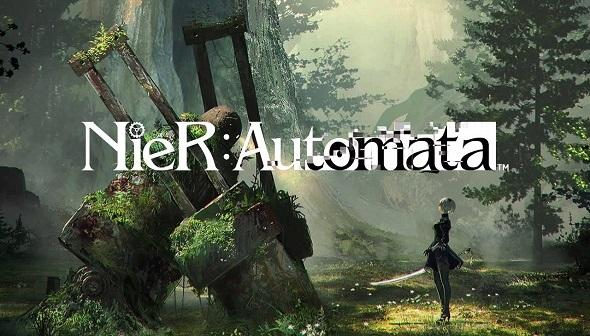

Guido de Vries

Ik ben Guido de Vries, ik ben 20 jaar en kom uit Edam. Ik ben een ietwat luie student, en werk het liefst zo min mogelijk. Mijn hobbies zijn muziek luisteren en nieuwe artiesten ontdekken, gamen, koken en feesten met mijn vrienden.

Wat wil je worden?
Ik weet het nog niet zo goed. Ik denk dat er een heleboel mogelijkheden zijn vanuit CMD en wil nog niet me op één ding focusen.
Welke kwaliteiten wil je hier ontwikkelen in dit project?
Ik vind logo's en pictogrammen heel interessant, en wil hier graag meer over leren. Verder wil ik ook graag beter worden in schetsen/tekenen.
Waarom heb je gekozen voor project Visual?
Omdat ik het ontwerpen en ideeën maken een van de leukste onderdelen vind binnen CMD.
Wat zijn je sterke en zwakke punten als ontwerper nu?
Ik denk dat ik best wat in mijn mars heb en mooie dingen kan creeëren, maar ik denk ook dat ik dingen snel goed genoeg vind, en niet ver genoeg doorstreef naar 'perfectie'.
Waarop wil je aan het einde van het project beoordeeld worden?
Ik wil beoordeeld worden op hoe goed mijn werk eruit ziet, niet of het precies 100% past bij mijn research. Nee, alleen het eindproduct.
Dingen die mij inspireren als ontwerper

Nier: Automata
Nier: Automata is een game die uitkwam in 2017. Wereldwijd is het een soort cult-hit geworden. Het heeft een ongelovelijk complex verhaal en interesante characters. De wereld is zo goed als onbewoonbaar nadat aliens bijna de hele beschaafdheid hebben uitgeschakeld. Het is het jaar 11945, je en jij vecht als android voor de mensen in een oorlog tegen de robots die zijn achtergelaten door de aliens.
Abstract: The Art of Design
Abstract is een Netflix documentaire reeks, waar iedere aflevering een spraakmakende designer wordt gevolgd. Het zijn hele diverse designers, van de architect Bjarke Ingels, tot de Lead Designer van Nike: Tinker Hatfield. Het is heel interessant, omdat je een blik in het leven van de ontwerpers krijgt, maar ook hun visie en passie. Je krijgt bij alle designers een ander verhaal, die uiteindlijk toch heel veel met elkaar overeen komen.

Stan Lee
Ik hou heel erg van verhalen. Lezen, gamen, series of films kijken, ik vind het allemaal geweldig. Dit is een van de redenen dat Stan Lee een van mijn helden is. Hij heeft zo zijn stempel gezet op de stripboek wereld, dat letterlijk iedereen zijn naam kent. En volgensmij alleen in positieve zin. Als ik later groot ben zou ik willen streven iemand als Stan Lee te zijn.
Kintsukuroi
Kintsukuroi is meer een begrip als een echt individueel ontwerp. Kintsukuroi is Japans voor:'Gouden Reparatie' wat heel letterlijk spreekt. Het is de kunst van het repareren met goud. De filosofie achter deze opmerkelijke vorm van knst is het omarmen van imperfecties. Als er bijvoorbeeld een vaas kapot gaat, word deze weer in elkaar gezet met naden van goud.